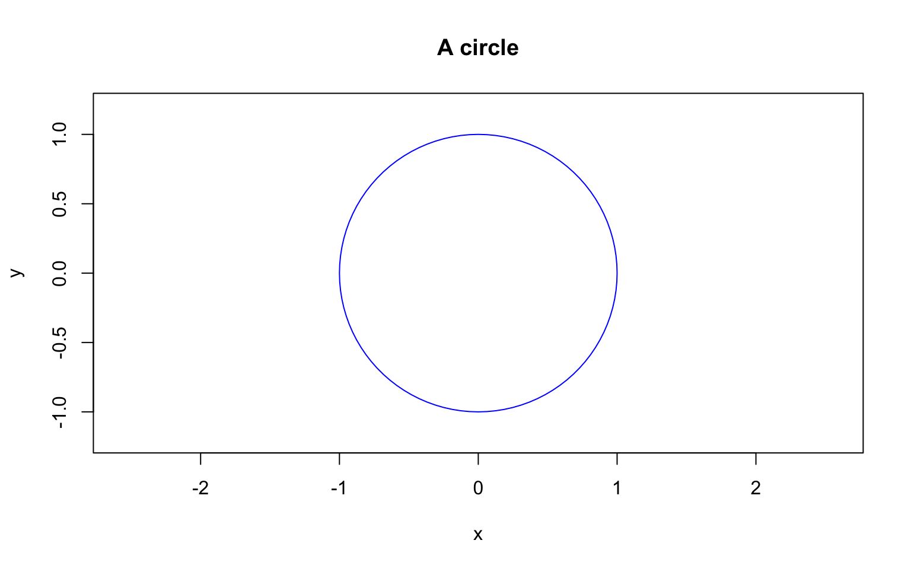
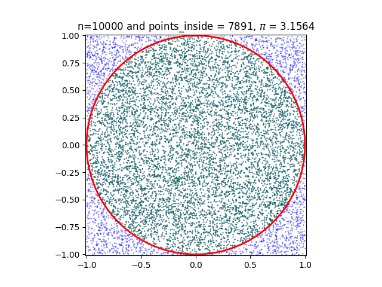
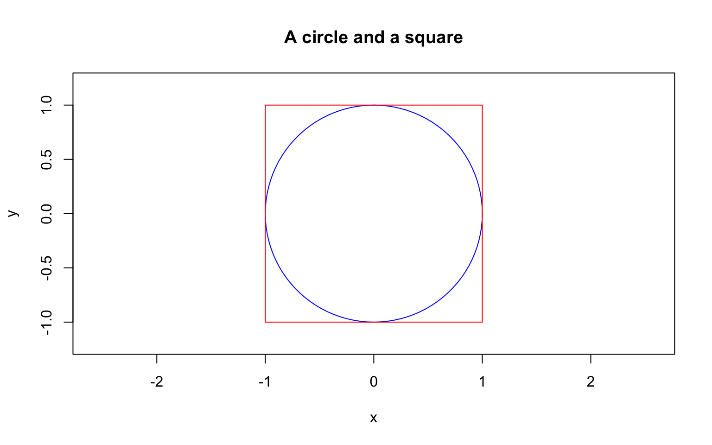
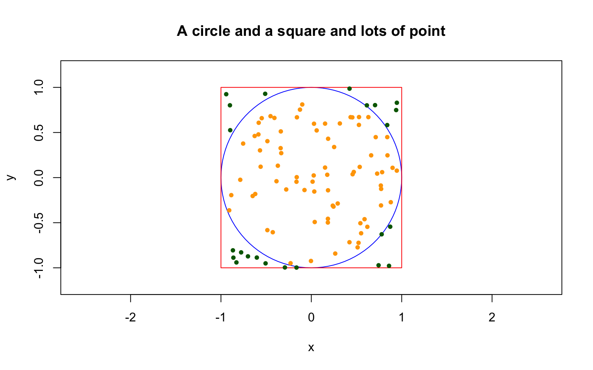
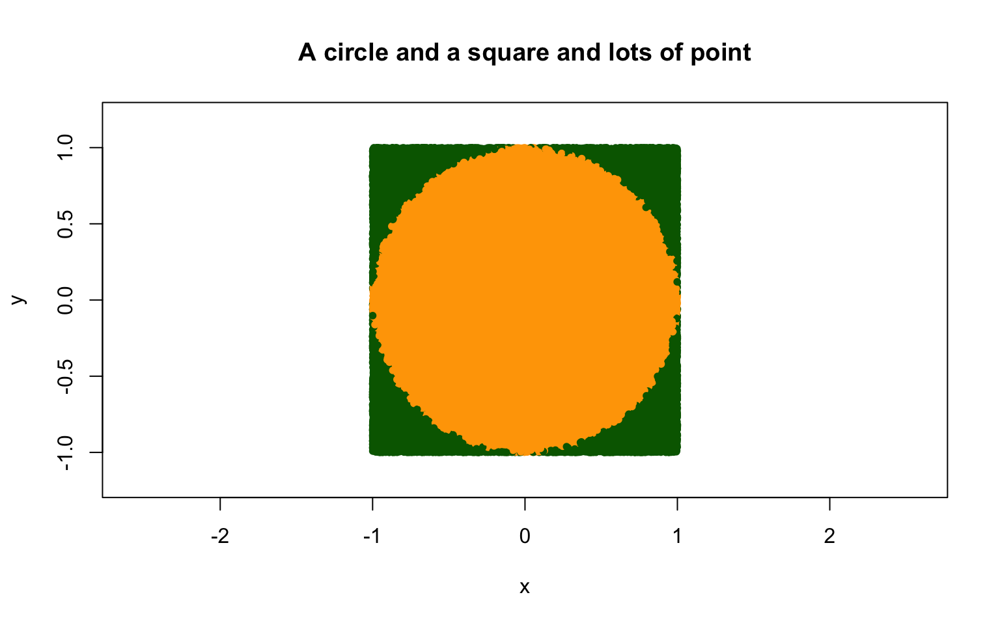
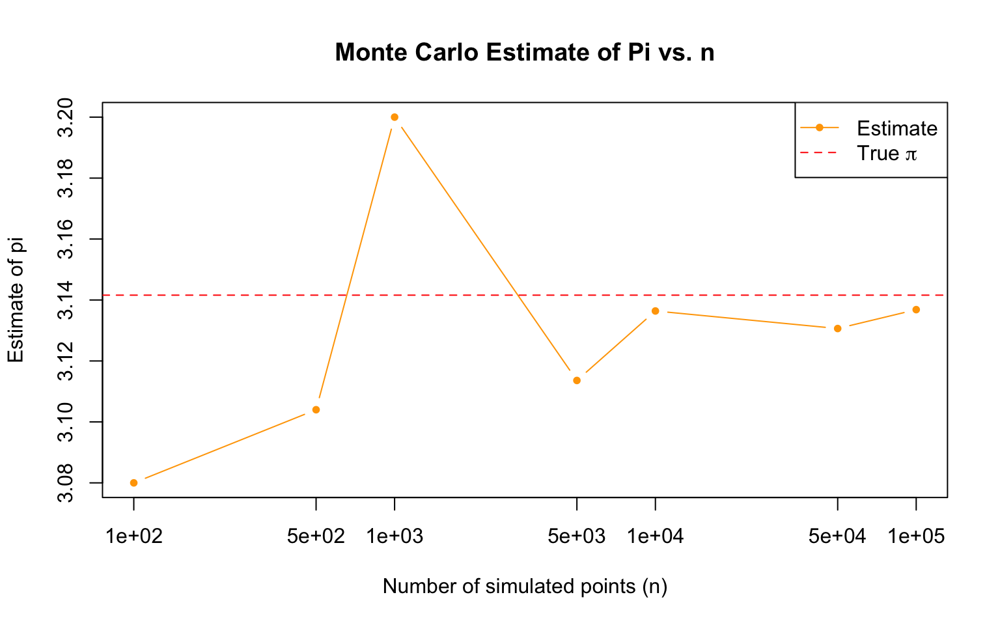
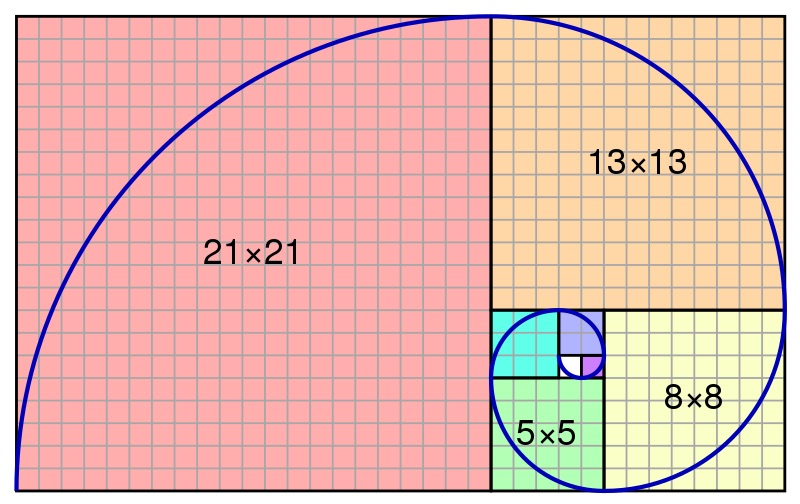
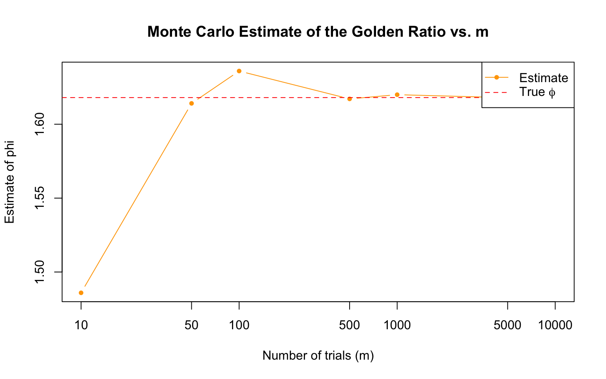
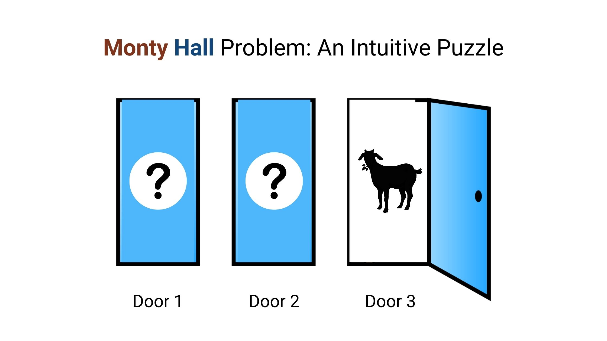

![]()

PSTAT 10 Data Science Principles
Lecture 12: Advanced Simulation
August 22, 2026
Introduction
🔁 Review: Lecture 11
👈 Last lecture we had yet another very math heavy lecture covering:
- Poisson Distributions
- Generalizing R Functions
- Continuous Random Variables
- Continuous Uniform Distribution
- Normal (Gaussian) Distribution
👀 Outline: Lecture 12
👇 This lecture we will conclude our study of probability by looking at:
- Simulation
- Harder probability questions
- Monte Carlo methods
📌 This will be our last R-focused lecture until Lecture 19, but R will still appear in homework and section exercises.
Simulating Pi
🥧 History of Estimating \(\pi\)
One of the oldest approximation problems humans have been working on is estimating \(\pi\).
There is evidence of estimating \(\pi\) as far back as:
- Ancient Babylon and Egypt (1700 - 1600 BCE)
- Ancient India (600 BCE)
- Ancient Greece (300 BCE)
- Ancient China (250 CE)
More recently we have estimated \(\pi\) using:
- Infinite series and trigonometric identities (middle ages)
- Rapidly converging infinite series (19th & 20th centuries)
- Supercomputers (modern day)

🥧 Estimating Pi
Proposed Methodology
We attempt to construct our own estimate of \(\pi\) using simulation on the unit circle.
Area of a Circle
Recall from basic trigonometry that the area of a circle is given by:
\[ A = \pi \times r^2. \]
When considering a unit circle \(r=1\), and so
\[ A = \pi. \]
Hence if we can approximate the area of a unit circle we approximate \(\pi\).
🥧 Approximate Unit Circle Area
Step by Step Approach
To approximate the area of the unit circle our approach is as follows:
- Draw a unit circle.
- Enclose the unit circle perfectly in a unit square.
- Simulate points uniformly in the square.
- Determine the proportion of points that land within the unit circle.
- This proportion is an approximation of the area of the circle \(\pi\) over the area of the square \(4\), and so we compute:
\[ \pi \approx 4 \times \text{Prop} \]
⭕ Draw a Circle
We draw a circle!
⬜ Draw a Square
Then perfectly draw a square around our circle:

🎯 Simulate Points
Then simulate a lot of points uniformly within the square:

🧮 Compute the Proportion
From \(n=100\) points
Here we have 77 points within the circle, and so we compute
\[ \pi \approx 4 \times 0.77 = 3.08. \]
- This is clearly not a very good approximation of \(\pi\).
- We have only simulated 100 points and so we have a high variance in our estimate.
Increasing accuracy!
⬆️ To increase our accuracy we increase the number of simulations.
Let’s up our simulation count from 100 points to 100,000 points and see what approximation we get.
📈 Increasing Accuracy

Here our approximation is 3.13816.
📊 Convergence to \(\pi\)
Let’s see how our estimate converges as we increase the number of simulated points \(n\).

📌 As \(n\) grows, the estimate settles down around the true value \(\pi \approx 3.14159\) — the same long-run averaging behaviour we saw earlier with expectation.
Monte Carlo Methods
🎲 Monte Carlo Methods
What are Monte Carlo Methods?
Monte Carlo (MC) methods are a study of these types of problems:
- Consider a deterministic but hard to measure value (such as \(\pi\)).
- Assume we have access to controlled random sampling (e.g.
runif()). - We can approximate the deterministic value from a large number of samples.
Still essential today
- Finance — pricing options and simulating portfolio risk under uncertain market conditions.
- Physics & engineering — modelling particle transport, nuclear reactions, complex systems.
- Machine learning & statistics — approximating intractable integrals in Bayesian inference.
- Operations research — estimating outcomes for scheduling, logistics, and queuing problems.
⏱️ MC Considerations — Computational Cost
Consideration 1: Time and computation effort.
Let’s compare how long it takes to simulate 100 versus 1,000,000 random values:
Time difference of 0.001812935 secsTime difference of 0.01979899 secs- Simulating more values takes more time, even though each individual draw is essentially instant.
- For large-scale simulations (millions or billions of trials), this added computation time can become a real bottleneck.
- There is a direct trade-off between accuracy and runtime — more samples generally means better accuracy, but longer to compute.
⏱️ MC Considerations — Error Bounds
Consideration 2: Error bounds.
Let’s compare the absolute error of our \(\pi\) estimate using \(m=100\) versus \(m=100{,}000\) samples:
[1] 0.1384073[1] 0.001872654- The error shrinks as we increase the number of samples \(m\).
- However, this reduction in error is not free — it comes at the cost of extra computation time, as we saw previously.
- In general, MC error decreases at a rate of roughly \(1/\sqrt{m}\), so quadrupling the sample size only halves the error.
⚖️ Evaluating MC Methods
Considerations
These considerations are essential in evaluating MC methods.
- How quickly can we simulate trials?
- What sort of error do we have?
- How fast does the approach converge?
Ideal Situation
A method that is easy to do (fast sampling), with predictable error rates that rapidly converges to the true value.
- This usually doesn’t exist!
- Generally need to make a trade off between speed and accuracy.
Buffon’s Needle
🪡 Buffon’s Needle
Buffon’s needle is a famous thought problem from the 1700s:
- Suppose we have a floor made out of wooden planks evenly spaced some distance
dapart. - If we drop a needle of length 1 onto the floor, what is the probability that it crosses between two planks?

🪡 Buffon’s Needle — Simplest Case
Interestingly, the probability \(p\) has a closed form expression which we can rearrange to estimate \(\pi\):
\[ p = \frac{2}{\pi}\times \frac{1}{d} \implies \pi = \frac{2}{p} \times \frac{1}{d}. \]
We will simulate the simplest case:
- Board distance \(d = \text{needle length} = 1\)
- Needle angle \(= \theta\)
- Distance from needle center to nearest plank \(=D\)
- Needle intersects lines when \(D > 0.5 \times \sin(\theta)\).

🪡 Buffon’s Needle Diagram
🪡 Buffon’s Needle Simulation
We conduct the following simulation:
D <- runif(m, 0, 0.5)simulates the distance from the needle’s center to the nearest plank, uniform between \(0\) and \(0.5\).theta <- runif(m, 0, pi)simulates the angle of the needle, uniform between \(0\) and \(\pi\).p <- sum(D < 0.5*sin(theta))/mcomputes the proportion of needles that cross a plank — our estimate of \(p\).
🪡 Buffon’s Needle — Increasing Accuracy
We can increase our accuracy by increasing our simulation count.
- Increasing \(m\) from 1,000 to 1,000,000 gives us a much closer approximation to the true value of \(\pi\).
- This mirrors exactly what we saw with our circle-and-square approach earlier — more samples means lower error, at the cost of additional computation.
- Buffon’s needle is a nice illustration that MC estimation isn’t limited to one setup — many different random experiments can be engineered to approximate the same constant.
Euler’s Number
🔢 Euler’s Number
We have worked with \(e\) every time we have used the exp() function, which is defined as:
\[ \exp(x) = e^x \]
i.e. raising \(e\) to the power of the input of the function.
- It is therefore the base of the natural logarithm \(\ln\).
- It also appears in a large number of the standard distribution functions (e.g. Poisson, Exponential, Normal, Gamma).
💪 Exercise — Lex Fridman Problem
05:00
Consider how we might estimate \(e\) with Monte Carlo simulation.

Lex Fridman Problem
Write and replicate a function that:
- Selects numbers with
runif()until the sum is \(>1\); - Determines how many selections it takes; and
- Repeats
m=10000times to approximate \(e\).
✅ Solution — Lex Fridman Problem
above_one()keeps drawing uniform random numbers and adding them to a running totali, counting how many draws it takes until that total exceeds \(1\).countis therefore the number of draws needed for a single trial’s running sum to pass \(1\).mean(replicate(m, above_one()))repeats this trialm=10000times and averages the counts, giving our Monte Carlo estimate of \(e\).
Golden Ratio
🌀 Golden Ratio
The golden ratio \(\phi\) is another important mathematical constant, which is defined as
\[ \phi = \frac{a}{b}\quad s.t.\quad \frac{a+b}{a} = \frac{a}{b}. \]
We have encountered \(\phi\) previously when working with the Fibonacci sequence.

🌀 Golden Ratio MC Estimation
We estimate the golden ratio as follows:
- Generate pairs of numbers \(a,b\) such that \(a>b\) at random;
- Compute \(U = (a+b)/a\) and \(L=a/b\) for each pair;
- Compute the ratio of \(U/L\); and
- Return the \(a,b\) values giving \(U/L\) closest to 1.
📌 This approach requires many trials.
📌 Recall that the actual value is: 1.61803…
🌀 Golden Ratio Convergence
Let’s see how our estimate converges as we increase the number of trials \(m\).

📌 As \(m\) grows, the estimate settles down around the true value \(\phi \approx 1.61803\).
Monte Carlo Integration
∫ Monte Carlo Integration
We can approximate integrals
We compute the following integral via simulation
\[ \int_0^5 x^3 dx. \]
Granted this is not a very interesting integral, but at least it is quite simple.
Idea: Express the integral as the expectation of a random variable, say \(X\sim\mathcal{U}(0,5)\) with PDF
\[ f_X(x) = \frac 15\quad \text{for}\quad 0<x<5. \]
∫ Rewrite the Integral
We can rewrite the integral as follows:
\[ \begin{aligned} \int_0^5 x^3 dx & = \int_0^5 5x^3 \times 1/5 ~dx \\ & = \int_0^5 5x^3 f_X(x)~dx \\ & = \mathbb{E}[5X^3]. \end{aligned} \]
Where \(X\sim\mathcal{U}(0,5)\). The problem reduces to:
- Simulating many \(\mathcal{U}(0,5)\) random variables;
- Cubing all simulations and multiplying them by 5;
- Taking the mean to estimate the integral.
∫ Approximate the Integral
Computing the actual value analytically we have:
\[ \int_0^5 x^3dx = \left[\frac{x^4}{4}\right]_0^5=\frac{5^4}{4} = 156.25. \]
- Here we could easily compute the integral analytically, so simulation wasn’t strictly necessary.
- This approach becomes genuinely useful when the integral is not tractable — e.g. it has no closed form, or is too high-dimensional to solve by hand.
- MC integration only requires that we can simulate from and evaluate the function — no calculus required!
The Monty Hall Problem
🚪 The Monty Hall Problem
The Monty Hall problem is another famous probability puzzle with the following setup:
- You are a contestant on a game show;
- You are shown three doors: a new car is behind one door and a goat is behind each of the others;
- You select a door at random and have the chance to keep whatever is behind the door;
- After choosing a door, the show host opens one of the two remaining doors to show a goat, at which point they ask you whether you would like to change your guess.
📌 Question: Should you change your guess?

🚪 The Monty Hall Solution
Solution: It is always better to switch doors!
Computing the odds of winning using conditional probability we find that:
- your odds of winning if you choose to stay are \(1/3\); whilst
- your odds of winning if you choose to change are \(2/3\).
This seems counter intuitive! Surely it is just 50/50, i.e. \(1/2\) for both — there are two doors and 1 is the winner?
🚪 Monty Hall Simulation
monty_hall_game <- function(strategy) {
prize_door <- sample(1:3, 1) # set door with car
player_choice <- sample(1:3, 1) # set player choice
remaining_doors <- setdiff(1:3, c(prize_door, player_choice))
if (length(remaining_doors) == 1) { revealed_door <- remaining_doors}
else { revealed_door <- sample(remaining_doors, 1)} # open door
if (strategy == "stay") { # stay put
final_choice <- player_choice
} else { # switch doors
options <- setdiff(1:3, c(revealed_door, player_choice))
if (length(options) == 1) {
final_choice <- options
} else {
final_choice <- sample(options, 1)
}
}
win <- final_choice == prize_door; return(win)
}monty_hall_game()plays one round of the game for a givenstrategy("stay"or"switch") and returns whether the player won.- It randomly places the prize and the player’s initial choice, then has the host reveal a goat door from whatever remains.
- Depending on the
strategy, the player’s final choice is either their original pick or the one remaining unopened door. - We’ll break this function down line by line on the next slide.
🚪 Monty Hall Simulation Breakdown
We initially set the door with the prize, selected door and remaining door.
We then simulate the host picking a door.
We then decide whether to switch or stick with the current door.
🚪 Testing the Claim
Let’s use our simulation to test the claim that switching is better, by playing many games under each strategy.
- Staying wins about 1/3 of the time, and switching wins about 2/3 of the time — exactly matching our theoretical solution.
- This is a great example of using simulation to sanity-check a counter-intuitive probability result, without needing to trust the maths alone.
- The larger we make
m, the closer these simulated win rates get to the true \(1/3\) and \(2/3\) probabilities. - This same general strategy — write a function for one trial, replicate it many times, and average the results — is exactly how we approached every Monte Carlo problem in this lecture.
Summary
✅ Topics Covered
🤔 We have now looked through several examples of more complex simulation, including simulating:
- Pi
- Buffon’s Needle
- Euler’s Number
- Golden Ratio
- Integrals
- Monty Hall Problem
📌 That’s all we need for probability in PSTAT 10!
📅 Next Class
🤩 Next class we will be moving away from RStudio and will instead be focusing on:
- Databases; and
- Introduction to SQL.